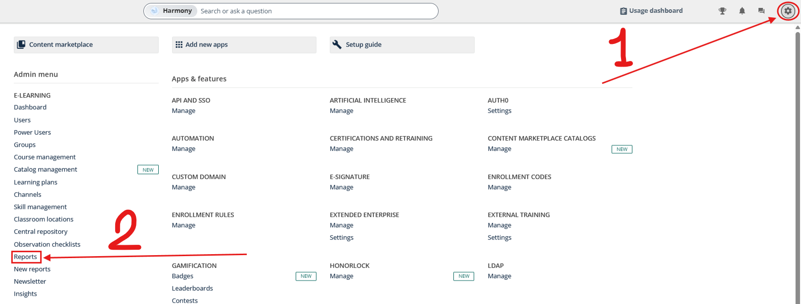
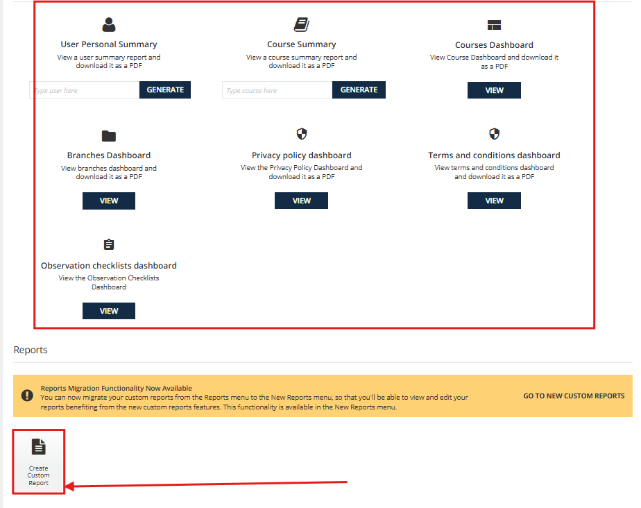
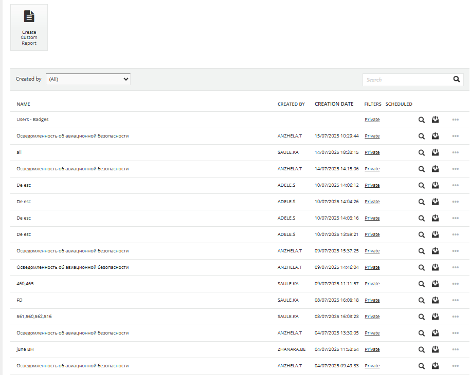
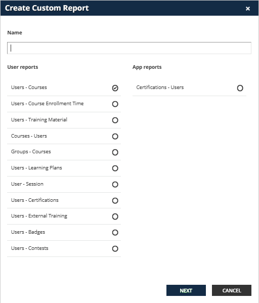
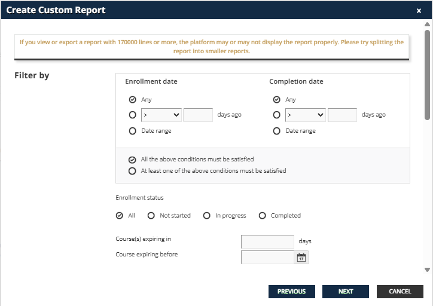
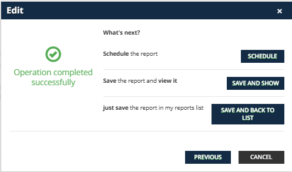
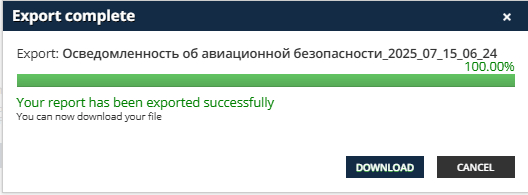

Внимание!
Эта инструкция предназначена для работы со старыми отчетами в LMS.
Если вы хотите узнать, как работать с новыми отчетами, пожалуйста, воспользуйтесь новым руководством по отчетам.
Эта инструкция предназначена для работы со старыми отчетами в LMS.
Если вы хотите узнать, как работать с новыми отчетами, пожалуйста, воспользуйтесь новым руководством по отчетам.
1
Доступ к меню администратора
Первым шагом является получение доступа к административной панели LMS. Это требует соответствующих прав администратора.

Подробное объяснение:
- Меню администратора обычно располагается в верхней части интерфейса или в боковой панели
- Оно может быть представлено в виде иконки шестеренки, кнопки "Администрирование" или выпадающего меню с именем пользователя
Полезные советы: Убедитесь, что у вас есть права администратора. Проверьте, что вы вошли в систему под правильной учетной записью. Некоторые функции могут быть доступны только в определенное время.
2
Переход к разделу "Отчеты"
В меню администратора найдите и выберите раздел "Отчеты". Этот раздел содержит все доступные отчеты и инструменты для их создания.

Что вы найдете в разделе "Отчеты":
| Тип отчета | Описание | Частота использования |
|---|---|---|
| Отчеты о пользователях | Информация о регистрации, активности, прогрессе | Ежедневно |
| Отчеты о курсах | Статистика завершения, оценки, время прохождения | Еженедельно |
| Отчеты о тестировании | Результаты тестов, анализ вопросов | После каждого теста |
| Административные отчеты | Системная статистика, использование ресурсов | Ежемесячно |
Важно знать:
Современные LMS системы обычно предоставляют возможность создания как стандартных, так и персонализированных отчетов. Персонализированные отчеты позволяют выбирать конкретные метрики и параметры.
3
Создание или выбор отчета
Теперь можно либо выбрать существующий отчет для корректировки, либо создать новый отчет с нужными параметрами.

Создание персонализированного отчета:
Укажите название отчета (например, "Отчет по успеваемости за квартал"). Выберите тип отчета (о пользователях или о курсах). Задайте временной период. Определите формат вывода данных.
Рекомендации по названию отчетов: Используйте понятные и описательные названия. Включайте дату или период в название. Указывайте целевую аудиторию (например, "Отчет для HR"). Избегайте слишком длинных названий.
Предупреждение:
Будьте осторожны при создании отчетов с большим объемом данных — они могут занять значительное время на обработку и повлиять на производительность системы.
4
Выбор пользователей и курсов
Определите, по каким пользователям и курсам необходимо создать отчет. Это критически важный шаг для получения релевантных данных.

Варианты выбора:
Все пользователи системы. Конкретные группы пользователей. Отдельные пользователи. Все курсы. Конкретные категории курсов. Отдельные курсы.
Важно:
Чем больше данных вы включите в отчет, тем дольше он будет обрабатываться. Рекомендуется использовать фильтры для получения только необходимой информации.
5
Настройка параметров отчета
Определите дополнительные параметры отчета, такие как временные рамки, формат данных и уровень детализации.

Основные параметры:
| Параметр | Описание | Варианты |
|---|---|---|
| Период | Временные рамки для отчета | Последний месяц, квартал, год, пользовательский |
| Формат | Формат выходного файла | Excel, CSV, PDF, HTML |
| Детализация | Уровень подробности данных | Сводка, детальный, расширенный |
| Группировка | Способ группировки данных | По пользователям, по курсам, по датам |
Рекомендации: Для регулярных отчетов используйте стандартные периоды (месяц, квартал). Для анализа выбирайте детальный уровень. Для презентаций подойдет сводка. Excel формат удобен для дальнейшей обработки данных.
6
Генерация отчета
После настройки всех параметров запустите процесс создания отчета. Система начнет обработку данных согласно заданным критериям.

Процесс генерации:
Нажмите кнопку "Создать отчет" или "Генерировать". Система покажет индикатор прогресса. Время обработки зависит от объема данных. Вы можете продолжить работу в другой вкладке.
Внимание:
Не закрывайте браузер во время генерации отчета. Большие отчеты могут обрабатываться до 10-15 минут. При возникновении ошибок попробуйте уменьшить объем данных или обратитесь к администратору.
7
Скачивание отчета
После завершения генерации отчета система предложит скачать готовый файл. Отчет будет доступен для загрузки в течение определенного времени.

Завершение процесса:
Появится ссылка "Скачать отчет". Файл будет сохранен в папку загрузок. Проверьте правильность данных в отчете. При необходимости повторите процесс с другими параметрами.
Важная информация:
Отчеты обычно доступны для скачивания в течение 7-30 дней. Сохраните файл в безопасном месте. Некоторые отчеты могут содержать конфиденциальную информацию. При работе с персональными данными соблюдайте требования безопасности.
Заключение
Создание отчетов в LMS — это важный инструмент для мониторинга образовательного процесса и анализа эффективности обучения. Следуя данному руководству, вы сможете легко создавать различные типы отчетов для решения ваших аналитических задач.
Помните: Регулярное создание отчетов поможет вам отслеживать прогресс обучения, выявлять проблемные области и принимать обоснованные решения для улучшения образовательного процесса в Air Astana Training Academy.